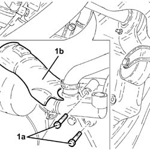
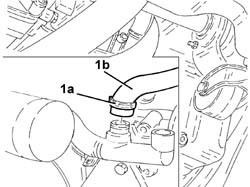
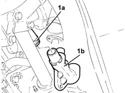

1088D22 WATER PUMP INLET CONNECTOR - R.R.
- Path
- Procedures > 10 ENGINE > 1088 ENGINE COOLING > 1088D COOLANT PIPES AND HOSES > 1088D22 WATER PUMP INLET CONNECTOR - R.R.
- Kind
- repair procedure (removal / refitting; the operation number is the code)
- Applies to
- engines: 2.0 16V JTD, 2.2 16V JTD; all production periods
- Interactive page
- https://sloeber94.github.io/elrnDB-fUlss/en/#/179007193
Applies to: engines: 2.0 16V JTD; all production periods
 Removing
Removing
 Refitting
RefittingOp. 7055B54 UNDER-ENGINE GUARD - R R
1. Undo the retaining bolts (1a) and remove the heat shield (1b) acting on the retaining clip.
 | Description | Code | Function |
|---|---|---|---|
. | Caliper | 1.881.138.000 | Open the retaining bands |

Applies to: engines: 2.0 16V JTD; all production periods
1. Open the securing band (1a) using special pliers and release the pipe (1b).

Applies to: engines: 2.0 16V JTD; all production periods
1. Undo the fastening band (1a) and remove the water pump inlet connector (1b).

Applies to: engines: 2.0 16V JTD; all production periods
Refitting
Removing- Place the connector in position and fit the two coolant pipes, renewing the retaining bands using special pliers.
| Description | Code | Function |
|---|---|---|---|
. | Caliper | 1.881.138.000 | Open the retaining bands |
- Tighten the fixing bolts and fit the heat shield in position.
Applies to: engines: 2.2 16V JTD; all production periods
Removing
RefittingOp. 7055B54 UNDER-ENGINE GUARD - R R
1. Undo the retaining bolts (1a) and remove the heat shield (1b) acting on the fastening clip.
| Description | Code | Function |
|---|---|---|---|
. | Caliper | 1.881.138.000 | Open the retaining bands |
Applies to: engines: 2.2 16V JTD; all production periods
1. Open the securing band (1a) using special pliers and release the pipe (1b).
Applies to: engines: 2.2 16V JTD; all production periods
1. Open the fastening band (1a) and remove the water pump inlet connector (1b).
Applies to: engines: 2.2 16V JTD; all production periods
Refitting
Removing- Place the connector in position and fit the two coolant pipes, then renew the fastening bands using special pliers.
| Description | Code | Function |
|---|---|---|---|
. | Caliper | 1.881.138.000 | Open the retaining bands |
- Tighten the fixing bolts and fit the heat shield in place.